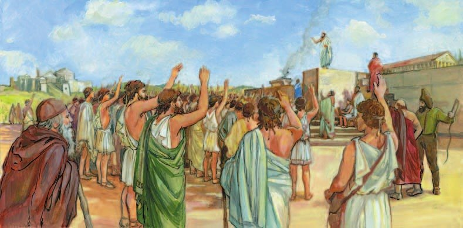
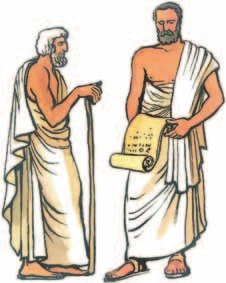
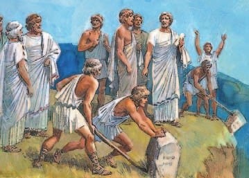
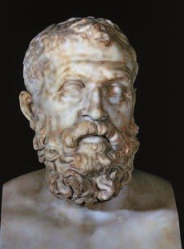
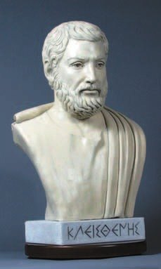

Власть в Афинах
Сначала Афинами правил совет знати. Он собирался на холме бога войны Ареса — поэтому и назывался .
Совет решал почти все важные дела и наказывал нарушителей. Он выбирал девять главных начальников — . Сначала архонтов выбирали на всю жизнь, потом на 10 лет, а потом всего на один год. Архонты заменили царя.
Отслужив свой срок, архонт входил в ареопаг — и оставался там до конца жизни.
Споры раньше решали по старым обычаям родов. В 621 году до н. э. архонт впервые записал законы. Зачем? Чтобы прекратить кровную месть между знатными родами — она раскачивала весь полис. И чтобы знатные не толковали законы как им удобно.
Древнейшим органом управления в Афинах был совет знати. Заседания совета проходили на холме, посвящённом богу войны Аресу, отсюда его название — ареопаг.
Первоначально совет распоряжался большинством важных дел в государстве, налагая кары и взыскания на всех нарушителей порядка. Совет выбирал девять высших должностных лиц — архонтов (сначала пожизненно, затем на 10 лет, потом на один год). Постепенно расширяя свои полномочия, коллегия архонтов заменила власть царя.
Спорные дела в Афинах издавна решались на основе родовых обычаев. Их дополнили новыми законами. Первый свод письменных законов был составлен архонтом по имени Драконт в 621 году до н. э. Целями законов были пресечение кровной мести среди аристократических родов, которая угрожала стабильности полиса, и ограничение произвола аристократов при толковании законов.

- Как было устроено управление древними Афинами?
1. Архонтов стали выбирать всего на год. Почему же знать всё равно держала власть в руках?
2. Зачем записывать законы, если их и так все знают по обычаю?
Реформы Солона
Большинство афинян были крестьянами: сеяли ячмень и пшеницу, на склонах гор растили виноград и оливки, держали коз и овец и делали из их молока сыр. Ещё жили ремесленники, торговцы, (помнишь их из §23?) и рабы. Раб-ремесленник, накопивший денег, мог выкупить себе свободу.
Лучшие земли захватили знатные. У крестьянина участок маленький — семью не прокормить. Он брал у знатного в долг семена или скот и почти весь урожай отдавал в уплату. Не вернул вовремя — землю забирали, а самого обращали в рабство и даже продавали за границу. Демос злился, и дело шло к большому конфликту.
Мир вернул . Он сам был знатным, но его знали как умного, честного и справедливого человека. В 594 году до н. э. афиняне выбрали его архонтом.
Первым делом Солон велел снять с полей каменные столбы долга: пока такой столб стоял, крестьянин не мог распоряжаться своим урожаем. А афинян, проданных за долги за границу, разыскали и выкупили на деньги государства.
Всех граждан Солон разделил на по доходу. Первые три разряда могли занимать должности и служили всадниками (кто побогаче) или гоплитами. Бедняки — — денег на оружие не имели: они служили гребцами на кораблях.
Ещё Солон учредил Совет четырёхсот и — суд присяжных. Судьёй мог стать гражданин любого разряда, если ему 30 лет. Теперь даже беднейшего защищали суд и закон от произвола богачей.
Главные законы стало принимать Народное собрание — все граждане с 20 лет. Женщины, рабы и метеки политических прав не имели. Так в Афинах начала складываться — «власть народа». Но архонтами и членами ареопага по-прежнему становились только знатные.
Законы Солона были с характером. Кто во время раздора не встанет ни на чью сторону — лишается прав гражданина: будь хозяином своего государства на деле. Кто не может сказать, на что живёт, — тоже лишается прав. А если отец не научил сына никакому делу, сын не обязан кормить его в старости.
Солон гордился тем, что не дал перевеса ни богатым, ни бедным, — встал между ними, «щитом прикрывая обоих».
В Афинах большинство населения занималось сельским хозяйством. Крестьяне сеяли ячмень и пшеницу, на склонах гор сажали виноград и оливки, разводили коз и овец, из молока которых получали сыр. Кроме знати и крестьян, здесь жили ремесленники, торговцы, переселенцы из других полисов Греции — метеки, а также рабы, труд которых использовали на рудниках, в ремесленных мастерских. Рабы-ремесленники, сумевшие скопить денег, могли купить себе свободу.
Лучшие земли захватили аристократы. Крестьяне, владевшие небольшими участками земли, не всегда могли прокормить свои семьи собранным урожаем. Они были вынуждены просить у знатных людей в долг семена, скот. Крестьянин, работая с утра до ночи, не мог выбраться из нужды, потому что значительную часть урожая отдавал в уплату долга. При неуплате долга в срок аристократы захватывали земли крестьян, превращая их в рабов. Часто рабов-должников продавали в чужие страны. Недовольство демоса своим разорением и закабалением грозило перерасти в серьёзный конфликт.
Мир в Афинах восстановил Солон, которого знали как умного, честного и справедливого человека. Сам Солон происходил из аристократов. В 594 году до н. э. жители Афин избрали его архонтом. Прежде всего Солон приказал снять с полей каменные столбы, на которых обозначались сумма долга крестьянина и срок уплаты. Пока стоял такой столб, крестьянин не мог распоряжаться своим урожаем. Граждан Афин, проданных в рабство за границу полиса, разыскивали и выкупали за счёт государства.
Всех граждан Афин разделили на разряды в соответствии с их доходом. Граждане первых трёх разрядов имели право занимать государственные должности и служить всадниками (представители этих разрядов с более высоким доходом) или гоплитами. Бедняки, феты, не имели средств для приобретения оружия, поэтому составляли вспомогательные войска или служили гребцами на кораблях.
Любопытные детали. Афинянин Солон считался самым мудрым из законодателей своего времени. Греки надолго запомнили законы Солона, которые служили воспитанию гражданских нравов. Раньше считалось, что междоусобные раздоры — это зло, и сам Солон так считал. Однако он издал такой закон: «Кто во время междоусобных раздоров не примкнёт ни к одной из сторон, тот лишается гражданских прав». Это учило граждан быть хозяевами своего государства не только в мыслях, но и на деле.
Законы Солона учили трудолюбию. Был закон: «Кто не может указать, на какие средства он живёт, тот лишается гражданских прав». Считалось, что этот закон Солон заимствовал у египтян. Был и другой закон: «Если отец не научил сына никакому делу, то такого отца такой сын не обязан содержать в старости». Этот закон Солон ввёл сам.
Солон больше всего гордился тем, что не дал своими законами перевеса ни богатым и ни бедным, ни знатным и ни безродным, ни землевладельцам и ни торговцам: «Я меж народом и знатью, щитом прикрывая обоих, / Стал, — и ни тем, ни другим кривдой не дал побеждать».
Наряду с существовавшим аристократическим ареопагом Солон учредил выборный Совет четырёхсот. Была введена гелиэя — суд присяжных. Членом гелиэи мог стать каждый гражданин любого из четырёх разрядов, достигший тридцатилетнего возраста. Теперь даже беднейший гражданин был защищён судом и законом от произвола богачей.
Высшую законодательную власть передали Народному собранию. Участвовать в его заседаниях могли все афинские граждане, достигшие двадцатилетнего возраста. Женщины, рабы и метеки не имели политических прав. Благодаря деятельности Солона в Афинах начала утверждаться демократия (означает «власть народа»). Тем не менее в ареопаг и на должности архонтов избирались только представители аристократии.


- Как ты думаешь, что побудило Солона провести свои реформы?
3. Почему Солон начал именно со столбов на полях?
4. Бедняк-фет при Солоне: что он мог, а чего нет?
5. Почему Солон говорил, что встал «щитом» между народом и знатью?
Афинские тираны
Со второй половины VII до конца VI века до н. э. в богатых полисах иногда власть захватывали — люди, которые правили одни. В Афинах самым известным тираном был , а после него — его сыновья.
Почему так вышло? Реформами Солона были недовольны и бедные — землю поровну не поделили, полного равенства нет, — и знатные: им хотелось вернуть потерянное. Ссорились народ со знатью и знатные между собой.
В 560 году до н. э. Писистрат, сам из знатного рода, захватил власть и стал править как древний царь.
Чтобы граждане его поддерживали, он давал им ссуды из казны и затеял большую стройку — работа и заработок для ремесленников. На Акрополе вместо деревянных построек выросли каменные храмы, проложили новые улицы, начали строить водопровод и стены до порта Пирей. А ещё по его приказу впервые записали «Илиаду» и «Одиссею» (§22) — до этого их только пересказывали.
Писистрат помогал ремеслу и торговле. Афины укрепились на островах Эгейского моря и на обоих берегах пролива Геллеспонт (сейчас — Дарданеллы). Это было время расцвета Афин.
А вот сыновья Писистрата, Гиппий и Гиппарх, правили жестоко. Многие семьи бежали из Афин, спасая жизнь. Гиппарха убили, Гиппия изгнали. В 510 году до н. э. тирания в Афинах пала.
В Древней Греции в период со второй половины VII (7) века до н. э. и до конца VI (6) века до н. э. в экономически развитых полисах на короткое время к власти приходили тираны. Так называли людей, установивших единоличное правление. Самой известной была тирания Писистрата и его сыновей в Афинах.
Не все преобразования Солона удовлетворили беднейшую часть горожан. Они были недовольны тем, что Солон не разделил землю поровну и не установил полного равенства граждан. Аристократы хотели вернуть потерянные привилегии. Конфликты вспыхивали не только между народом и знатью, но и в среде самой аристократии. Писистрат, представитель аристократического рода, в 560 году до н. э. захватил власть и стал править подобно древним царям.
Писистрат стремился расположить к себе граждан, чтобы укрепить свою власть. Гражданам полиса выдавали ссуды из государственной казны. Тиран развернул в Афинах бурное строительство, чтобы обеспечить занятость населения и дать заработок ремесленникам. На месте старых деревянных построек на Акрополе выросли каменные храмы, были проложены новые улицы, началось строительство водопровода и крепостных стен до гавани в Пирее. Ко двору привлекали деятелей литературы и искусства. По приказу Писистрата впервые записали поэмы Гомера «Илиада» и «Одиссея», до этого передававшиеся только устно.
Писистрат поощрял развитие ремесла и торговли. При нём Афины распространили своё влияние на несколько островов в Эгейском море и укрепились на обоих берегах Геллеспонта (современный пролив Дарданеллы). Годы правления Писистрата отмечены экономическим и культурным расцветом Афин.
Жестокостью отличались правления преемников Писистрата — его сыновей Гиппия и Гиппарха. Многие семьи вынуждены были бежать из Афин, спасая свою жизнь. Гиппарх был убит, а Гиппий изгнан из Афин. Таким образом, в 510 году до н. э. тирания в Афинах пала.
- Какие причины позволили Писистрату захватить власть в Афинах?
6. Писистрат захватил власть силой. Почему же годы его правления называют временем расцвета?
7. Чем правление Писистрата отличалось от правления его сыновей — и чем это кончилось?
Демократические преобразования Клисфена
возглавил борьбу против сыновей Писистрата, а потом сам встал во главе Афин.
Раньше граждане делились на четыре объединения по родам. Клисфен разделил их на десять — округов по месту жительства. В каждой филе смешались люди из разных мест, и знатным родам стало труднее командовать.
Совет четырёхсот, который выбирали по родам, он заменил Советом пятисот. В него попадали по от каждой из десяти фил. Как считалочка во дворе, когда решают, кто водит: решает случай, а не знатность или богатство.
Клисфен ввёл . На Народном собрании каждый писал на черепке имя того, кто, по его мнению, опасен для демократии. Если против человека голосовало больше половины граждан, его отправляли в изгнание. Прав гражданина и имущества он не терял, но надолго уходил из политики.
Войском стала руководить коллегия из десяти .
Реформы Клисфена смели последние остатки родового строя. Афины стали демократическим полисом.
Клисфен возглавил движение против тирании преемников Писистрата, а затем встал во главе государства. Он ввёл новое административное деление, распределив всех граждан по десяти территориальным филам (округам) вместо прежде существовавших четырёх родоплеменных объединений. Смешанное население различных территорий ослабило влияние родовой знати в таких филах.
Клисфен заменил Совет четырёхсот, избиравшийся по родовым филам, на Совет пятисот. В новый орган управления входили выборные по жребию от каждой из десяти территориальных фил. Введение остракизма (голосование при помощи черепков-остраконов) на заседании Народного собрания было направлено против возможного усиления личной власти отдельных граждан. На черепке следовало написать имя гражданина, угрожавшего афинской демократии. Каждый, против кого голосовало больше половины граждан, отправлялся в изгнание.
Созданная Клисфеном коллегия из десяти стратегов возглавила афинское войско. Реформы Клисфена, уничтожив последние остатки родового строя, завершили процесс формирования демократического полиса в Афинах.

- Каким образом Клисфен расширил демократию в Афинах?
8. Жребий и остракизм — оба против одного и того же. Против чего?
9. Совет четырёхсот при Солоне, Совет пятисот при Клисфене. Что изменилось, кроме числа?
Подведём итоги
- Что значили реформы Солона для афинского общества?
- Какую политику и почему проводил Писистрат?
- Что такое остракизм и в каких случаях он применялся?
- Как повлияли реформы Клисфена на структуру афинского полиса?
Прочитай отрывок из сочинения «Афинская полития» и ответь на вопросы.
Порядок древнего государственного устройства, существовавшего до Драконта, был следующий. На высшие должности выбирали по благородству происхождения и по богатству; правили должностные лица сначала пожизненно, а впоследствии в течение десяти лет.
Важнейшими и первыми по времени из должностей были царь, полемарх и архонт. Из них первою была должность царя, она была унаследована от отцов. Второй присоединилась к ней должность полемарха, ввиду того что некоторые из царей оказались в военных делах слабыми… Последней является должность архонта… Архонты имели право решать дела окончательно. …Наконец, Совет ареопагитов, хотя и имел обязанность быть только блюстителем законов, распоряжался большинством важных дел в государстве, налагая кары и взыскания безапелляционно на всех нарушителей порядка. Это объясняется тем, что выбор архонтов производился по благородству происхождения и по богатству, а из них-то и избирались ареопагиты. Вот почему — это единственная из должностей, которая остаётся пожизненной и теперь.
Сформулируй ответ на главный вопрос параграфа — чем различались аристократы и основное население Афин — демос? Приведи два-три довода.
Проверь себя
Нажимай по очереди — от самого древнего к самому близкому к нам.
1. Где заседал ареопаг?
2. Кто первым записал законы Афин?
3. Что Солон велел убрать с полей?
4. Что такое гелиэя?
5. Что впервые записали по приказу Писистрата?
6. Как голосовали при остракизме?
Расскажи вслух
Как управлялись Афины до Солона
- Ареопаг — совет знати на холме Ареса — решал важные дела и наказывал нарушителей.
- Девять архонтов: сначала пожизненно, потом на 10 лет, потом на год; потом — в ареопаг пожизненно.
- 621 год до н. э. — Драконт записал первые законы: против кровной мести и произвола знати.
Реформы Солона
- Долги разоряли крестьян; в 594 году до н. э. Солон снял столбы долга и выкупил проданных в рабство.
- Разряды по доходу: первые три — должности, всадники и гоплиты; феты — гребцы.
- Совет четырёхсот, гелиэя с 30 лет, Народное собрание с 20 лет — начало демократии; архонты — по-прежнему знать.
Тирания Писистрата
- Недовольны и бедные, и знатные; в 560 году до н. э. Писистрат захватил власть.
- Ссуды, стройка: храмы на Акрополе, улицы, водопровод, стены; впервые записали Гомера; расцвет Афин.
- Сыновья Гиппий и Гиппарх правили жестоко; в 510 году до н. э. тирания пала.
Реформы Клисфена
- Десять фил по месту жительства вместо четырёх родовых.
- Совет пятисот по жребию от каждой филы; десять стратегов во главе войска.
- Остракизм: имя на черепке, больше половины голосов — изгнание.
Главный вопрос: аристократы и демос
- Аристократы — знатные и богатые: ареопаг, архонты, лучшие земли.
- Демос — крестьяне, ремесленники, торговцы: трудились, попадали в долги и даже в рабство.
- Солон и Клисфен шаг за шагом давали демосу права: собрание, суд, жребий, остракизм.